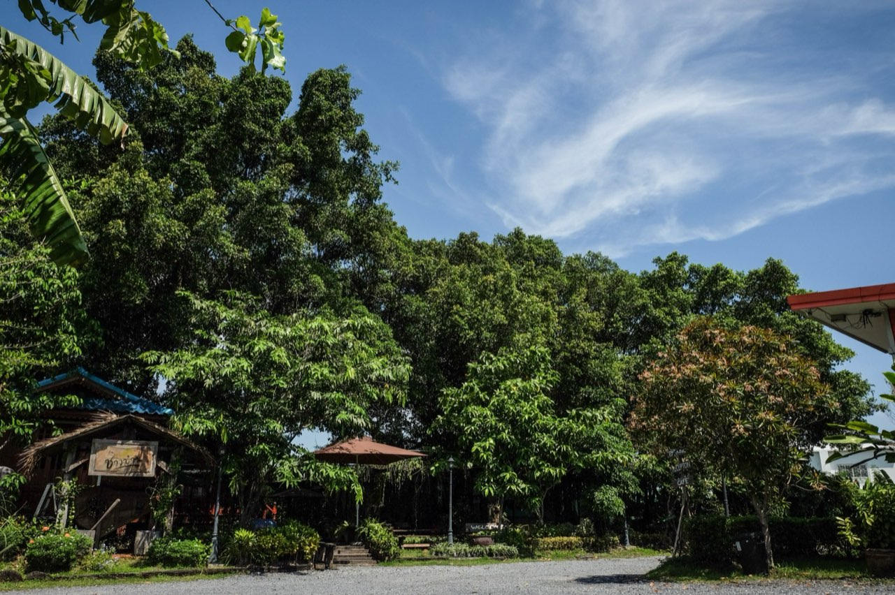

พาน้องหมาน้องแมวเที่ยว: โรงแรม Pet Friendly ย่านปากเกร็ด–เมืองทอง

สำหรับคนรักสัตว์ การไปเที่ยวหรือทำธุระทั้งทีแต่ต้องทิ้งน้องไว้เฝ้าบ้านคือเรื่องที่ตัดใจยากที่สุด ข่าวดีคือย่าน ปากเกร็ด–เมืองทองธานี มีที่พักแบบ Pet Friendly ที่พาน้องหมาน้องแมวมาพักด้วยกันได้ ไม่ต้องกังวลเรื่องฝากเลี้ยง
| สัตว์ที่รับ | สุนัขและแมว |
|---|---|
| ค่าดูแล | 300 บาทต่อน้องหนึ่งตัว ต่อคืน |
| ห้องพัก | ห้อง Pet Friendly เริ่มต้น 1,090 บาท/คืน รวมอาหารเช้า |
| พื้นที่วิ่งเล่น | บ้านสวนชั้นเดียว 21 หลัง เปิดประตูห้องออกสวนได้เลย |
| ระยะถึงอิมแพ็ค | ~3.8 กม. · ขับรถ 7-10 นาที |
ค่าดูแลคิด ต่อคืน ไม่ใช่ครั้งเดียวต่อการเข้าพัก พัก 2 คืนพาน้องมา 1 ตัว คือค่าดูแล 600 บาท เขียนให้ชัดตรงนี้เพราะถ้าเข้าใจผิด ตัวเลขตอนเช็คเอาต์จะต่างกันเท่าตัว
เตรียมตัวก่อนพาสัตว์เลี้ยงไปพักโรงแรม
- เช็คเงื่อนไขล่วงหน้า — รับสัตว์เลี้ยงประเภทไหน น้ำหนักเท่าไหร่ มีค่าใช้จ่ายเพิ่มไหม
- เตรียมของใช้ของน้อง — ที่นอน ชามอาหาร ของเล่น และถุงเก็บของเสีย
- พาน้องออกกำลังก่อนเข้าห้อง — ให้น้องได้วิ่งเล่นคลายเครียด จะได้พักผ่อนง่ายขึ้น
- อาบน้ำ/เช็ดตัวให้เรียบร้อย — เพื่อความสะอาดและถนอมห้องพัก
เลือกโรงแรม Pet Friendly แบบไหนให้น้องมีความสุข
จุดสำคัญคือ พื้นที่สีเขียวให้น้องวิ่งเล่น, ห้องที่สะอาดไม่มีกลิ่นอับ และทีมงานที่เข้าใจและเป็นมิตรกับสัตว์เลี้ยง บรรยากาศแบบบ้านสวนจะช่วยให้ทั้งคนและน้องผ่อนคลายได้มากกว่าห้องในตึกสูงแคบๆ
ที่ โรงแรมบ้านเพิ่มสุข เรามีห้อง Pet Friendly โดยเฉพาะ สวนกว้างร่มรื่นให้น้องวิ่งเล่น ใกล้อิมแพ็ค เมืองทองเพียง 7-10 นาที ห้องสะอาด ทีมงานยินดีต้อนรับทั้งสี่ขาและสองขา มีค่าใช้จ่ายดูแลเพิ่มเติมเพียง 300 บาทต่อน้องหนึ่งตัว ต่อคืน
สอบถามห้อง Pet Friendly และเงื่อนไขการพาสัตว์เลี้ยงเข้าพักได้เลย
สอบถาม & จองผ่าน LINEคำถามที่พบบ่อย
ย่านปากเกร็ด–เมืองทองธานี มีโรงแรมที่รับสัตว์เลี้ยงไหม
โรงแรมบ้านเพิ่มสุขรับทั้งสุนัขและแมวในห้อง Pet Friendly ห่างจากอิมแพ็ค เมืองทองธานี 3.8 กิโลเมตร ขับรถ 7-10 นาที ที่พักส่วนใหญ่ในย่านนี้ไม่รับสัตว์เลี้ยง
ค่าบริการสัตว์เลี้ยงเท่าไหร่
300 บาทต่อน้องหนึ่งตัว ต่อคืน คิดทุกคืนที่เข้าพัก ไม่ใช่ครั้งเดียวต่อการจอง พัก 2 คืนพาน้องมา 1 ตัวคือ 600 บาท
รับทั้งหมาและแมวเลยไหม
รับทั้งสองอย่าง แจ้งจำนวนและขนาดของน้องมาทาง LINE ตอนจอง เพื่อจัดห้องให้เหมาะสม
มีที่ให้น้องวิ่งเล่นไหม
มีครับ ที่พักเป็นบ้านสวนชั้นเดียว 21 หลังอยู่ในสวน เปิดประตูห้องออกมาเจอสนามหญ้าได้เลย และตั้งอยู่ในซอยที่พักอาศัย ไม่ติดถนนใหญ่
ฝากน้องไว้ในห้องระหว่างไปงานได้ไหม
รบกวนคุยกับเราทาง LINE ก่อนเพื่อตกลงวิธีที่เหมาะสม เนื่องจากอิมแพ็คห่างแค่ 7-10 นาที แขกส่วนใหญ่เลือกขับกลับมาดูน้องระหว่างวันมากกว่า